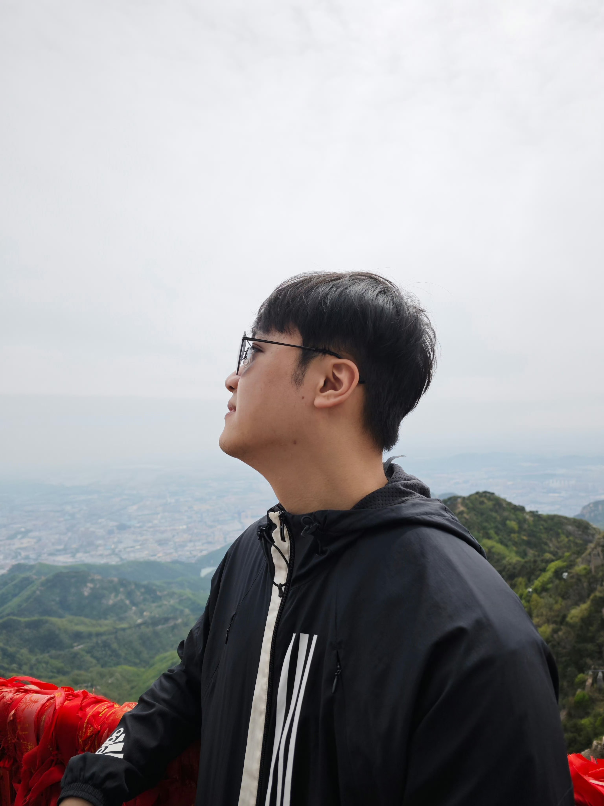

OCT 2026 — OCT 2027Incoming
Nanyang Technological University
Visiting Ph.D. Student · AutoMan Lab · Singapore
Host: Prof. Chen Lv · China Scholarship Council (CSC)
Ph.D. Candidate at CUHK-Shenzhen & FNii
I study how autonomous systems perceive road scenes, reason about lane connectivity, and model how the world evolves. My research spans lane topology reasoning, world models, and vision-language models.
I am advised by Prof. Zhen Li and Prof. Shuguang Cui, with research on autonomous driving in collaboration with T Lab, Tencent. Previously, I worked on cross-modal face recognition and person re-identification at Sun Yat-sen University with Prof. Haifeng Hu and Dr. Weipeng Hu.
Visiting Ph.D. Student · AutoMan Lab · Singapore
Host: Prof. Chen Lv · China Scholarship Council (CSC)Ph.D. Candidate in Computer and Information Engineering
Passed the qualifying examination (QE) · July 2026
Advisors: Prof. Zhen Li & Prof. Shuguang Cui · Full scholarshipM.S. in Electronics and Communication Engineering
Advisor: Prof. Haifeng Hu · Ranked 1st in comprehensive evaluationModality-invariant representations and unsupervised learning for NIR–VIS face recognition.
B.E. in Electronics and Information Engineering
GPA: 3.85 / 4.00 · Top 2.94%YOLOv5 detection, CRNN–CTC recognition, and an intelligent parking system.
Serving as a reviewer for ICLR 2027, NeurIPS 2026, and AAAI 2027.
CoPo is published at KDD 2026: geometry-guided representations for coherent lane and traffic topology reasoning.
Passed my qualifying examination (QE) and advanced to Ph.D. candidacy.
Awarded the China Scholarship Council (CSC) scholarship for my research visit to NTU.
Follow how lane geometry and connectivity evolve across consecutive driving frames.
Explore visual-language understanding through lane visualizations and structured text output.
@inproceedings{luo2026geometry,
title={Geometry-Guided Representations for Coherent Lane and Traffic Topology Reasoning in Driving Scenes},
author={Luo, Yueru and Zhou, Changqing and Yang, Yiming and Li, Erlong and Zheng, Chao and Cui, Shuguang and Li, Zhen},
booktitle={Proceedings of the 32nd ACM SIGKDD Conference on Knowledge Discovery and Data Mining V. 2},
pages={3504--3515},
year={2026},
doi={10.1145/3770855.3817889}
}
Download .bibNo publications match your search. Try another keyword or topic.
Overseas research visit · Awarded May 2026
Excellent Master's Thesis · Sun Yat-sen University
Northwest A&F University
TopoCoT · WACV 2026
Robust and Generalized Lane Topology Understanding and HD Map Generation through CoT Design.
IEEE TNNLS · IEEE TIFS · IEEE TCSVT · Pattern Recognition · Engineering Applications of Artificial Intelligence · Digital Signal Processing
CIE6020: Information Theory · Fall 2025
CIE6032: Selected Topics in Deep Learning Foundations and Their Applications · Summer 2026
Teaching Assistant · CUHK-Shenzhen